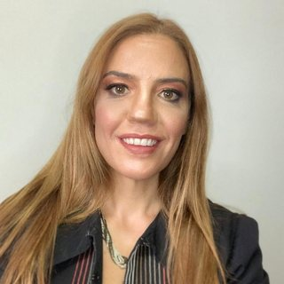
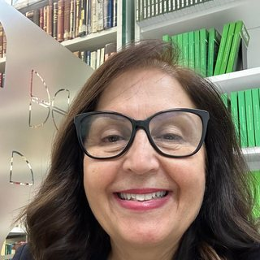
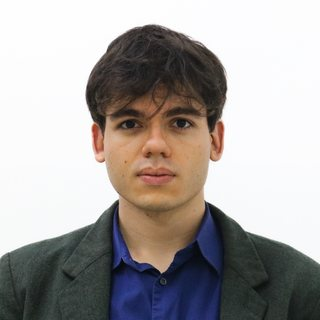

Observatório SOMA is developed under the Jean Monnet Actions of the Erasmus+ programme as an open, evidence-grade tool for public oversight of mining.
O Observatório SOMA é desenvolvido no âmbito das Ações Jean Monnet do programa Erasmus+, como uma ferramenta aberta e com padrão probatório para a supervisão pública da mineração.

UFMG
Professora titular de direito europeu da Faculdade de Direito da UFMG. Coordenadora do Centro de Excelência Jean Monnet (CEJM). Cátedra Jean Monnet em Direito. Coordenadora do Observatório de Políticas Públicas Sustentáveis.
Full professor of European law at the Faculty of Law of UFMG. Coordinator of the Jean Monnet Centre of Excellence (CEJM). Jean Monnet Chair in Law. Coordinator of the Observatory of Sustainable Public Policies.

Dom Helder
Pós-doutora pela Universidad de Castilla-La Mancha (Toledo, Espanha); doutora e mestre em Direito Constitucional pela UFMG. Pós-graduada em Direito Ambiental e Desenvolvimento Sustentável. Professora do Programa de Pós-Graduação em Direito Ambiental do Centro Universitário Dom Helder.
Postdoctoral researcher at the University of Castilla-La Mancha (Toledo, Spain); PhD and master's in Constitutional Law from UFMG. Postgraduate degree in Environmental Law and Sustainable Development. Professor in the Graduate Programme in Environmental Law at Dom Helder University Centre.
Dom Helder
Doutora e mestre em Direito Ambiental e Desenvolvimento Sustentável pela Escola Superior Dom Helder Câmara. Especialista em Direito Público Global pela Universidad de Castilla-La Mancha (Espanha). Especialista em Direito Público pela Universidade Cândido Mendes e em Docência com Ênfase em Educação Jurídica pela Faculdade Arnaldo. Advogada.
PhD and master's in Environmental Law and Sustainable Development from Escola Superior Dom Helder Câmara. Specialist in Global Public Law from the University of Castilla-La Mancha (Spain). Specialist in Public Law from Universidade Cândido Mendes and in Teaching with an Emphasis on Legal Education from Faculdade Arnaldo. Lawyer.

Dom Helder
Mestre em Direito Ambiental e Desenvolvimento Sustentável e professor assistente no Centro Universitário Dom Helder, onde se graduou em Direito. Pesquisa Direito Constitucional, Ambiental e do Mar; integra o Grupo de Pesquisa Estratégico da Pan-Amazônia. Advogado ambiental e assessor especial da Presidência do Instituto Brasileiro de Direito do Mar (IBDMAR).
Master's in Environmental Law and Sustainable Development and assistant professor at Dom Helder University Centre, which also awarded the law degree. Research in constitutional law, environmental law and the law of the sea; member of the Pan-Amazon Strategic Research Group. Environmental lawyer and special adviser to the President of the Brazilian Institute of the Law of the Sea (IBDMAR).
Dom Helder
Mestranda em Direito pelo Centro Universitário Dom Helder. Pós-graduanda em Direito Penal e Criminologia pela PUCRS. Membro da Comissão de Criminologia da OAB/MG e do grupo de pesquisa AMET. Associada ao IBDMAR. Advogada.
Master's student in Law at Dom Helder University Centre. Postgraduate student in Criminal Law and Criminology at PUCRS. Member of the Criminology Committee of OAB/MG and of the AMET research group. Member of IBDMAR. Lawyer.